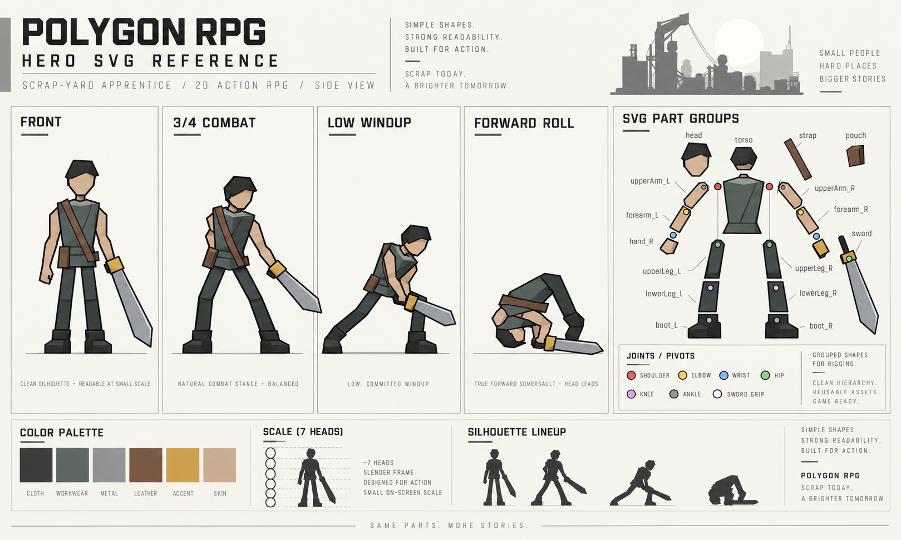
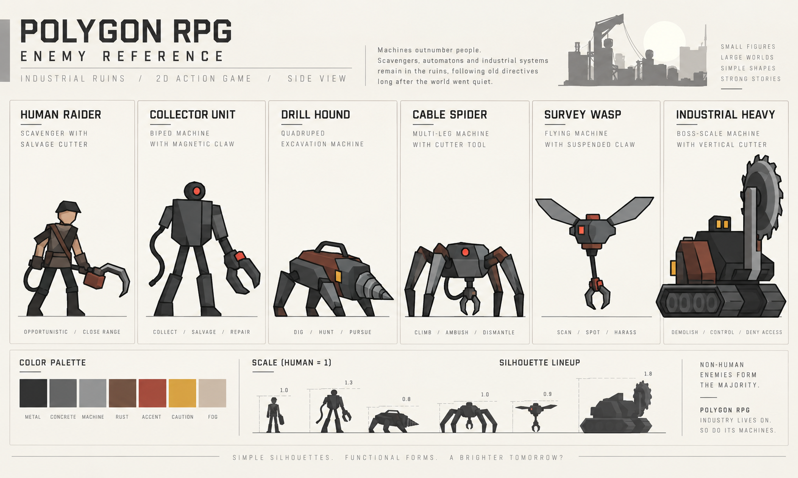

그래픽 담당자 전달 자료 · 기준 d1ee0e75d35a
공통 아트 기준
작은 캐릭터와 넓은 세계 · 안정된 reference sheet · 생활형 산업 왕국.
모든 요청에 붙일 기준
| 항목 | 작업 지침 |
|---|---|
| 기준 스타일 | 실제 게임에서 재현 가능한 정돈된 레오곡 계열 Flat Design. 고밀도 컨셉 일러스트를 목표로 하지 않습니다. 밝은 자연광·sky value·더 밝은 원경과 낮은 detail 밀도를 기본으로 합니다. 작은 캐릭터와 넓은 세계, 안정된 실루엣, 단순하고 명확한 vector/polygon, 작은 머리와 긴 가는 팔다리, 큰 면의 3~4단계 셀 명암. 특정 작품의 캐릭터 복제나 러프하고 삐뚤빼뚤한 손그림은 지양합니다. |
| 생활형 산업 세계 | 밝은 생활형 산업 왕국이며 낮은 채도를 칙칙함으로 해석하지 않습니다. 사람들이 오래된 설비를 고쳐 쓰며 생업을 이어갑니다. 낡음=멸망, 고철=쓰레기, 기계=디스토피아가 아닙니다. 옛 군수 규격은 생활 기계에 남은 잠금·인장·접속 방식입니다. |
| 화면과 전투 | PC gameplay의 인간형 약 18~22%를 유지하고 모바일에서도 세계/스케일을 우선합니다. 일반 전투 자동 줌인 대신 silhouette·외곽선·배경 대비·telegraph·weapon trail·VFX로 읽힙니다. Boss 등 특별 연출만 framing 예외입니다. |
| 배치 | 주요 길·상호작용은 clean read, detail은 cluster, negative space는 의도적으로 남깁니다. 장식이 인물·공격 실루엣을 덮지 않게 합니다. 지역은 색뿐 아니라 구조·생활 설비·형태도 구별됩니다. |
| 원본과 승인 | 새 기본 원본은 의미 있는 부위/면/anchor를 가진 *.master.svg입니다. reference sheet는 예쁜 컨셉 한 장보다 실제 제작과 key pose의 기준입니다. 계약 확정, reference 승인, 현재 등록, runtime 검증을 구분합니다. 기존 PNG는 보관·보조 출력이며 SVG 승인의 증거가 아닙니다. |
| 조명·그림자 | 작가는 면 경계·재질·구조적 가림을 정의하고 엔진은 현재 광원에서 밝기를 계산합니다. 완성된 고정 그림자를 bake하지 않습니다. 작은 객체 contact / 큰 구조물 actual cast / 작은 장식 none을 구분합니다. |
| 주인공 | 약 7등신·짧은 작업복·cross strap·넓은 검/방패·낮은 준비를 유지합니다. 골반/흉곽 선행 후 팔이 따르는 횡/사선 베기와 CONTACT 뒤 감속, 실제 forward somersault를 기준으로 합니다. |
| 기존 이야기 보존 | 구조를 위해 제어핵을 떼고 재난을 수습하는 이야기, 자유 순서의 다섯 지역과 두 로봇의 역할은 유지합니다. 고대 병기는 사무적인 낡은 방송·과장된 조립/수거 행동으로 위협과 웃음을 함께 보이며 신체 공포물이 아닙니다. |
지역 Color Identity
| 지역 | 색상 방향 | 재질/표면 | 생활·형태 |
|---|---|---|---|
| 폐광 산촌 | 갈색 / 황토 / 경고 황색 | 암갈색 철판·분진·암반·레일 | 레일·지지대·보행식 굴착기를 생활 기반시설로 읽힙니다. |
| 항구 조선소 | 청회색 / 청록 / 녹슨 적색 | 도장강·선체·굵은 케이블·물·안개 | 크레인·도크·케이블은 생업 설비이며 염분 마모와 인양 구조가 특징입니다. |
| 온실 평원 | 황동 / 탁한 녹색 / 수증기 백색 | 유리·배관·밸브·재배 구조물 | 배관·동력로는 농업 설비입니다. 응축수·녹청·압력 하드웨어로 지역화합니다. |
| 설산 교역로 | 백청 / 남청 / 열선 주황 | 눈·철도·장갑판·열선 리벳 | 제설 열차와 신호/열선은 교역로를 유지하는 설비입니다. |
| 붉은 채석장 | 적철 / 짙은 갈색 / 먼지 베이지 | 붉은 암반·절단날·중량 철판 | 암반 절단기는 거대한 작업 도구이며 절개면과 중량 구조가 특징입니다. |
전체 저채도는 유지하지만 미세한 색온도 차이만으로 구분하지 않습니다. 스크린샷만 보고 지역을 알아야 합니다. 이 색상 방향을 기준으로 reference에서 최종 swatch를 검토하며 색만 바꾼 공용 맵으로 대체하지 않습니다.
작업별 세부 계약
보존된 이전 참고 PNG
아래는 과거 공유 원본을 변경 없이 보관한 PNG입니다. 신규 기본 납품인 master SVG나 이번 reference sheet 승인본으로 오인하지 않습니다.

